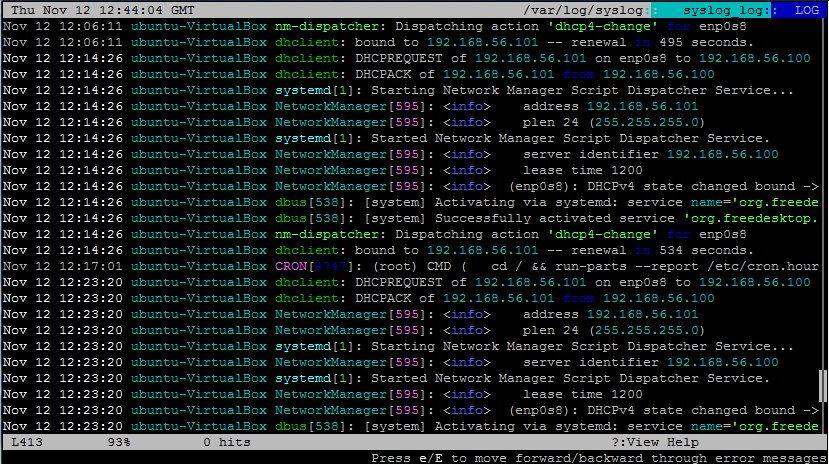
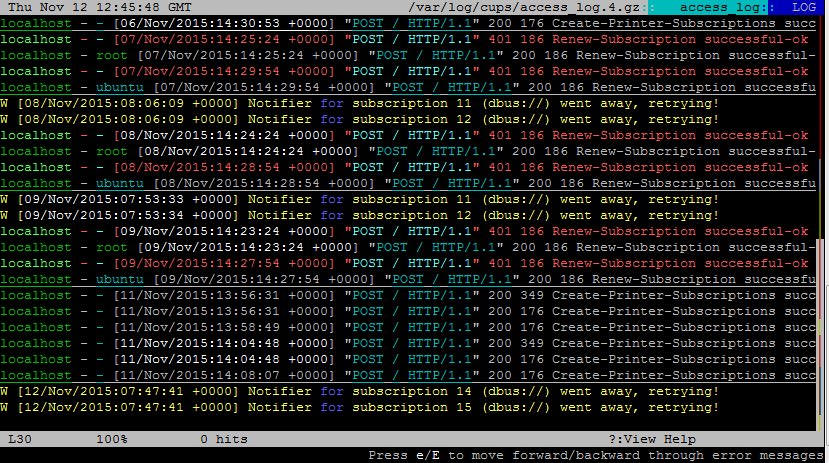

编译自：http://www.ubuntugeek.com/lnav-ncurses-based-log-file-viewer.html
作者： ruchi
原创：LCTT https://linux.cn/article-6677-1.html
译者： ictlyh
本文地址：https://linux.cn/article-6677-1.html
日志文件导航器（Logfile Navigator，简称 lnav），是一个基于 curses 的，用于查看和分析日志文件的工具。和文本阅读器/编辑器相比， lnav 的好处是它充分利用了可以从日志文件中获取的语义信息，例如时间戳和日志等级。利用这些额外的语义信息， lnav 可以处理像这样的事情：来自不同文件的交错的信息；按照时间生成信息直方图；支持在文件中导航的快捷键。它希望使用这些功能可以使得用户可以快速有效地定位和解决问题。
Syslog、Apache 访问日志、strace、tcsh 历史以及常见的带时间戳的日志文件。读入文件的时候回自动检测文件格式。
以时间区划来显示日志信息数量。这对于大概了解在一长段时间内发生了什么非常有用。
只显示那些匹配或不匹配一些正则表达式的行。对于移除大量你不感兴趣的日志行非常有用。
在你输入到时候会同时完成检索；当添加了新日志行的时候会自动加载和搜索；加载行的时候会应用过滤器；另外，还会在你输入 SQL 查询的时候检查其正确性。
日志文件视图会自动往下滚动到新添加到文件中的行。只需要向上滚动就可以锁定当前视图，然后向下滚动到底部恢复显示后文。
从所有文件中加载的日志行会按照日期进行排序。使得你不需要手动从不同文件中收集日志信息。
错误和警告会用红色和黄色显示。高亮还可用于： SQL 关键字、XML 标签、Java 文件行号和括起来的字符串。
有快捷键用于跳转到下一个或上一个错误或警告，按照指定的时间向后或向前翻页。
每个日志文件行都相当于数据库中的一行，可以使用 SQL 进行查询。可以使用的列取决于查看的日志文件类型。
会自动保存你之前输入的命令和搜素，因此你可以在会话之间使用它们。
会实时自动检测和解压压缩的日志文件。
打开终端运行下面的命令
sudo apt-get install lnav
如果你想使用 lnav 查看日志，你可以使用下面的命令，默认它会显示 syslogs
lnav

如果你想查看特定的日志，那么需要指定路径。如果你想看 CPU 日志，在你的终端里运行下面的命令
lnav /var/log/cups

via: http://www.ubuntugeek.com/lnav-ncurses-based-log-file-viewer.html
编译自：http://www.ubuntugeek.com/lnav-ncurses-based-log-file-viewer.html
作者： ruchi
原创：LCTT https://linux.cn/article-6677-1.html
译者： ictlyh
本文由 LCTT 原创翻译，Linux中国首发。也想加入译者行列，为开源做一些自己的贡献么？欢迎加入 LCTT！
翻译工作和译文发表仅用于学习和交流目的，翻译工作遵照 CC-BY-NC-SA 协议规定，如果我们的工作有侵犯到您的权益，请及时联系我们。
欢迎遵照 CC-BY-NC-SA 协议规定转载，敬请在正文中标注并保留原文/译文链接和作者/译者等信息。
文章仅代表作者的知识和看法，如有不同观点，请楼下排队吐槽 :D
Linux.CN © 2003-2016 Linux中国 | Powered by DX | 图片存储于七牛云存储
京ICP备05083684号-1 京公网安备110105001595
服务条款 | 除特别申明外，本站原创内容版权遵循 CC-BY-NC-SA 协议规定
分享到微信朋友圈
打开微信，点击底部的“发现”，
使用“扫一扫”将网页分享至朋友圈。